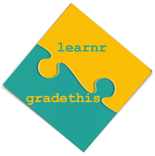

Ce tutoriel a un statut particulier car il s’adresse à des formateurs curieux de (mieux) comprendre comment… construire des tutoriels interactifs avec R et au sujet de R (voire d’autres langages).
Ce double regard, d’apprenant et d’enseignant, est inhérent à la fabrique d’un support réussi : l’enseignant doit savoir se mettre à la place de l’apprenant. En imaginant à l’avance ses raisonnements, parfois presques justes, parfois mal engagés, il peut mettre à sa disposition d’utiles “feedbacks”. Ainsi, loin d’être bloqué voire vite découragé, l’apprenant appréciera de sentir une “voix” secourable le guider avec - autant que faire se peut - bienveillance !
Pour illustrer quelques techniques offertes par learnr et gradethis, et les principes qui les animent, ce tutoriel se donne un objectif “apparent” très simple. Il vise à ce que l’apprenant, même totalement débutant en R, code deux instructions simples, déclaration d’un vecteur caractère et jeu sur les mots d’une phrase. Et ainsi comprenne le fonctionnement d’une fonction de concaténation, dual selon la nature des paramètres en entrée.
L’objectif secondaire, et en réalité principal si vous êtes formateur R, est de vous faire sentir les potentialités de ces packages d’aide à l’élaboration de tutoriels. Et par la même occasion vous inviter à (re)considérer la valeur du temps passé à fignoler les mécanismes de guidages que vous prévoyez pour vos élèves.
Suivez les instructions suivantes. Vous pouvez sans risque tester l’exécution de votre code, avant de cliquer sur “Soumettre” pour correction !
# Ceci est une ligne de commentaire, elle commence par un #.
# Vous allez placer dans une variable dénommée "mots" un vecteur
# des quelques mots de la phrase "Je programme avec R !"
# Tapez votre propre code dans la ligne suivante (ligne 5) :
# Tapez ensuite l'instruction qui va remettre bout à bout tous ces mots
# Fin de l'exercice# Voici un exemple : dans une variable nommée liste, je place un vecteur de 2 mots :
liste <- c('bonjour', 'vous')# Pour assembler les éléments de ma liste,
# je peux utiliser la fonction paste.
# Pour en savoir plus sur les paramètres de paste :
?paste# paste peut s'utiliser de deux façons :
# 1 - avec des mots séparés en autant d'arguments,
# il faudra alors spécifier sep = ' '
paste('bonjour', 'vous', sep = ' ')
# => 'bonjour vous'# 2 - avec un vecteur, il faudra alors spécifier collapse = ' '
paste(c('bonjour', 'vous'), collapse = ' ')
# => 'bonjour vous'# La solution...
# ... est à portée d'un clic ;
# si vous n'êtes pas totalement désespéré(e),
# donnez-vous encore une chance de trouver seul(e) !# La solution !
mots <- c('Je', 'programme', 'avec', 'R', '!')
paste(mots, collapse = ' ')Si au test de votre bloc, une erreur en rouge apparait ci-dessus, repérez le n° de ligne mentionné pour corriger ou effacer, et si besoin consultez les indices !
Assurez-vous enfin de répondre par le bouton “Soumettre” avant de continuer.
Refaites s’il vous plaît le 1er exercice en remplissant les espaces blancs (soulignés). Veillez à ne laisser aucun caractère souligné résiduel. Vous pouvez double-cliquer pour sélectionner toute une “case” à remplir.
# ceci est une ligne de commentaire, elle commence par un #
# placez dans une variable dénommée "mots" un vecteur
# des quelques mots de la phrase "Je programme avec R !"
# remplacez les blancs soulignés dans la ligne suivante (ligne 5)
____ <- c('Je', '_________', 'avec', '_', '_')
# tapez ensuite l'instruction qui va remettre bout à bout tous ces mots
paste(____, collapse = "_")
# fin de l'exercice# dans une variable nommée liste je place un vecteur de 2 mots
liste <- c('bonjour', 'vous')# La solution !
mots <- c('Je', 'programme', 'avec', 'R', '!')
paste(mots, collapse = ' ')paste : selon le type de contenu qu’elle ingère, la façon de spécifier le délimiteur varie. Prenez le temps de réfléchir à la bonne réponse avant de retourner chaque carte !
paste appartient au cœur du langage R. Sa variante paste0 colle toutes les chaines de caractère en entrée sans séparateur (équivalent de paste(…, collapse = ’’)).
Dans le contexte tidyverse/stringr, paste a pour équivalent str_c. La librairie stringr rassemble toutes les fonctions qui gèrent les chaines de caractère et les préfixe par str_, ce qui facilite leur mémorisation.
Cet exercice final s’adresse au formateur considérant l’intérêt des outils exposés dans ce tutoriel.
Je vous invite à classer par ordre de difficulté pédagogique (ou charge cognitive) croissante ces différentes “widgets”.
Un “problème de Parsons” consiste stricto sensu à proposer à l’apprenant d’ordonner des lignes de code qui lui sont présentées dans le désordre.
Je reprends cette idée en en élargissant le champ (lignes de code => concepts), pour ce dernier exercice, qui n’a donc pas de solution ‘mathématique’ incontestable. Mais la recherche en pédagogie permet de dégager une hiérachie ‘naturelle’.
Le widget ci-dessous est donc un genre de problème de Parsons, appliqué à la pédagogie elle-même !
Avec cette dernière page se clôt ce tutoriel exemple, destiné à vous apprendre un peu de R, mais surtout à vous faire réfléchir sur l’intérêt d’un tutoriel bien construit. Certes, cela demande un peu de temps d’essayer de se mettre dans la tête de ses élèves, mais cela en vaut la peine !